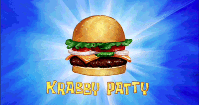
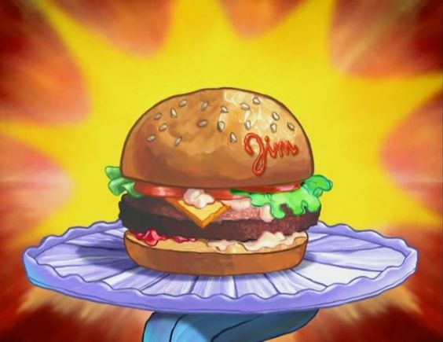

KRABBY PATTY

What is a Krabby Patty?
The Krabby Patty is more than just a fictional burger from the beloved animated series
"SpongeBob SquarePants"; it's a central element to the show's charm and humor.
Created by Stephen Hillenburg, the Krabby Patty is the signature dish served at the Krusty Krab, a fast-food
restaurant located in the underwater city of Bikini Bottom. The restaurant is owned by the frugal yet
endearing Mr. Krabs, who takes great pride in the Krabby Patty and its success.
The burger is portrayed as an
extraordinarily delicious and highly coveted item, often causing
characters to go to great lengths to obtain or protect it. Its secret formula is one of the show's most br
enduring
mysteries, and much of the series' plot revolves around the attempts by the show's
antagonist, Plankton, to steal the secret recipe from Mr. Krabs. Plankton's schemes to acquire the
formula are typically comedic and elaborate, showcasing his desperation and the lengths he'll go
to achieve his goal.
Ingredients:
- Top Bun
- Lettuce
- Tomato
- Cheese
- Patty
- Pickles
- Onions
- Ketchup
- Mustard
- Bottom Bun
FLAVOR
- Seasonings:
-Basic seasoning usually includes salt and pepper. Additional spices and herbs can be added for extra flavor,
such as garlic powder, onion powder, paprika, or cumin.
- Binders:
-Ingredients like breadcrumbs, eggs, or oats might be used to help the patty hold its shape and enhance its texture.
PREPARATION
- Forming:
-The ground meat or alternative is mixed with seasonings and any additional ingredients. The mixture is then shaped into round,
flat patties. The thickness and size of the patty can vary based on personal preference or recipe.
- Cooking:
- Patties are typically cooked on a grill, griddle, or skillet. They can be cooked to different levels of doneness
(rare, medium-rare, medium, medium-wezll, well-done) depending on the desired outcome.
TEXTURE
- External:
-When cooked properly, the exterior of the patty has a browned, slightly crispy crust due to the Maillard reaction,
which adds flavor and texture.
- Internal:
The interior texture can range from tender and juicy to firm and dry, depending on the cooking time and fat content.
For beef patties, the ideal texture is moist and flavorful without being greasy.
VARIATION
- Cheeseburger Patty:
A beef patty with a slice of cheese melted on top during the final moments of cooking.
- Veggie Patty:
Made from vegetables, grains, and/or legumes, often seasoned and shaped similarly to a meat patty.
- Chicken Patty:
Made from ground chicken, which might include additional flavorings like herbs and spices to complement the lighter meat.
History of Krabby Patty
History of krabby patty
BURGERS

burgers